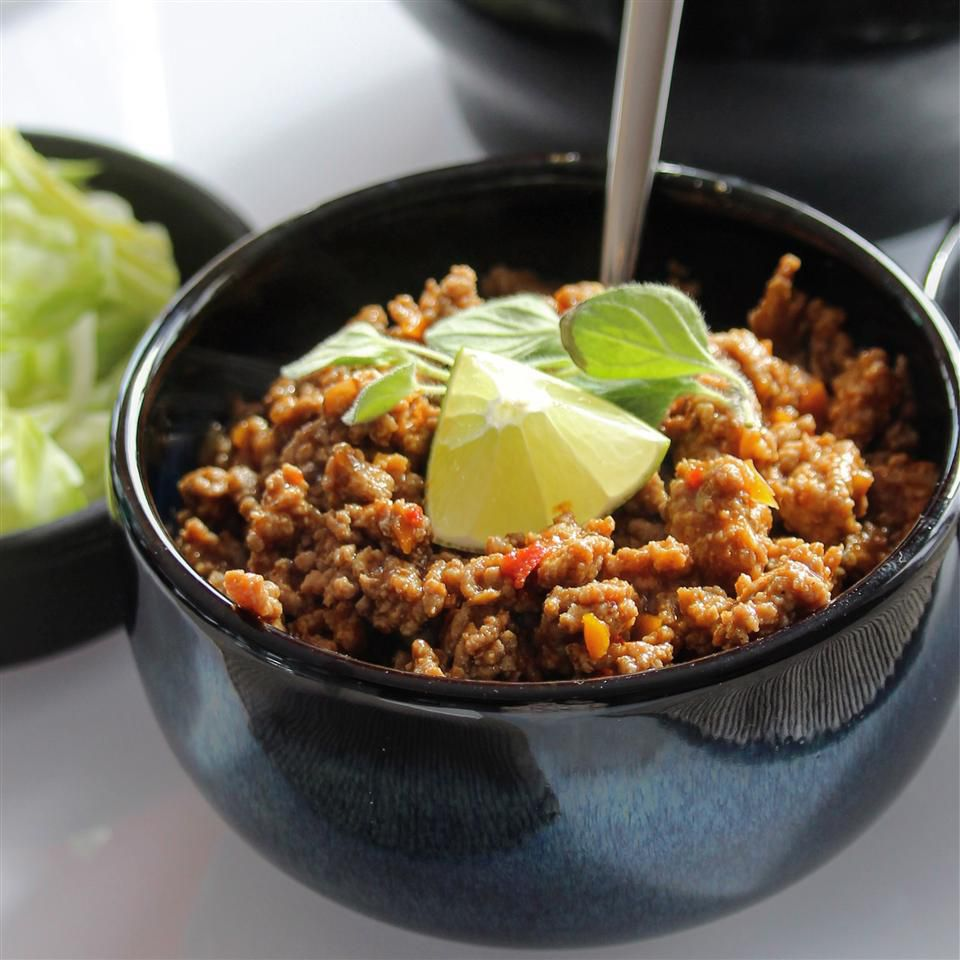

Ground Turkey Taco Meat

Description
Ground Turkey Taco Meat is a simple, flavor-packed recipe that is ready to eat in 15 minutes or less!
You'll love the tender turkey meat full of taco seasoning, lime, and salsa! Perfect for meal prepping and a myriad of recipes,
this lighter meat option is a great base for all your taco favorites!
Ingredients
- 1 ½ tablespoons chili powder
- 2 teaspoons ground cumin
- 1 teaspoon ground paprika
- 1 teaspoon salt
- ½ teaspoon garlic powder
- ½ teaspoon onion powder
- ½ teaspoon dried oregano
- ¼ teaspoon cayenne pepper
- 12 ounces ground turkey
- ½ cup water
- 1 tablespoon cider vinegar
- 1 ½ teaspoons brown sugar
Steps
- Combine chili powder, cumin, paprika, salt, garlic powder, onion powder, oregano, and cayenne in a small bowl.
- Heat a large nonstick skillet over medium heat. Add ground turkey and cook, stirring to break up clumps, until no longer pink, about 5 minutes.
Stir in spice mixture and water. Reduce heat and simmer, stirring occasionally, until most of the liquid is absorbed, about 10 minutes.
- Stir in cider vinegar and brown sugar; simmer until flavors combine, 3 to 4 minutes. Transfer to a serving bowl.